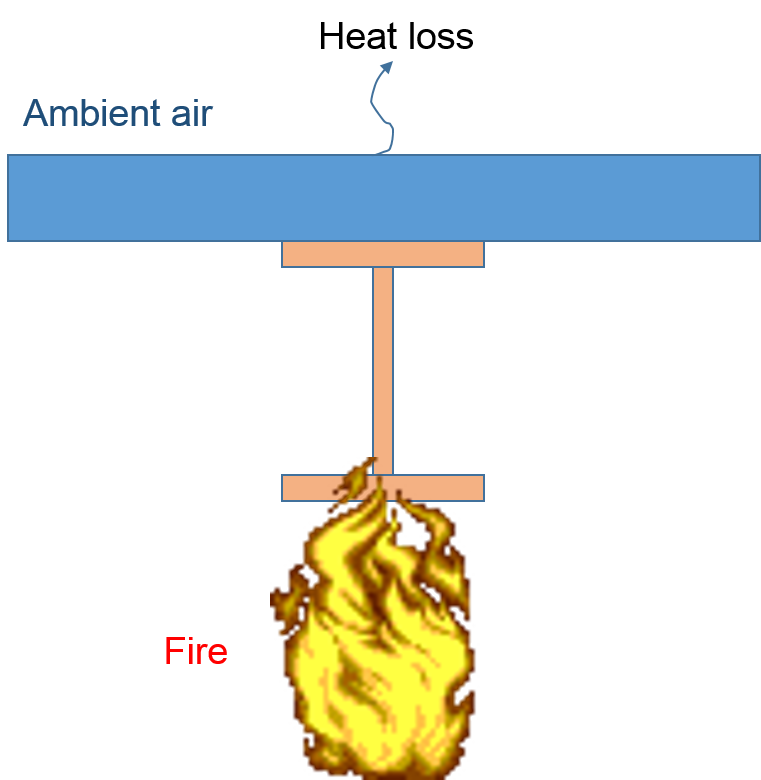

Getting started with OpenSees for Fire
In this section, basic guidance will be presented to help users get started with OpenSees for Fire. The following topics are discussed
- Download and Run OpenSees
- Run Thermo-mechanical Analysis in OpenSees
- Run Heat Transfer Analysis in OpenSees
- Model 'structure in fire' using SIFBuilder in OpenSees
Download and Run OpenSees
For users of OpenSeesThermal, the executable binary file is required to be downloaded, either with Tcl/Tk being installed in the right place in your operating system. The latest version of OpenSeesThermal could be downloaded from the Download page . also the web-link for downloading Tcl/Tk could be found over there.
Tcl should be installed properly in user's computer before running OpenSees. The installation should be directed to the directory as shwon as below;

Users are allowed to input their commands through the command line window directly,or use "source" command, which is highly recommended for its convenience.
When using "source" method, it is better to place the OpenSees.exe and the tcl command files in the same folder then you have a relatively short file path.

Run Thermo-mechanical Analysis
[Download the example package for Thermo-mechanical analysis]
Let's start from the "example-SteelBeam-uniform.tcl" which models a simply supported steel beam subjected to UDL and thermal action varying with time. The model configuration is shown as below:

- Model Builder
- Nodal definition
- Material and section definition
- Thermal action definition
A basic model builder command is used here to initialise the model environmrnt, which will be created in a two dimensional plane and for each node it has three degrees of freedom.
model BasicBuilder -ndm 2 -ndf 3;
Two external Tcl files are employed to visualise the model, which are pre-written by other developers and have been vastly used.
source DisplayPlane.tcl;
source DisplayModel2D.tcl;
The coordinates of the beam nodes are defined using the node command, which are followed by the boundary conditions at the end nodes to define a simply supported configuration.
node 1 0 0;
node 2 1000 0;
node 3 2000 0;
node 4 3000 0;
node 5 4000 0;
node 6 5000 0;
node 7 6000 0;
fix 1 1 1 0;
fix 7 0 1 0;
A uniaxial material including thermo-mechanial properties is defined according to Eurocode 3 steel material. Then a fibre based section can be defined. Noticed the keyword for thermo-mechanical fiber section should be written as fiberSecThermal which can be found in Wsection definition or explicitly in the main script.
uniaxialMaterial SteelECThermal 1 308 2.1e5;
set d 355; # depth
set bf 171.5; # flange width
set tf 11.5; # flange thickness
set tw 7.4; # web thickness
set nfdw 8; # number of fibers along dw
set nftw 1; # number of fibers along tw
set nfbf 1; # number of fibers along bf
set nftf 4; # number of fibers along tf
Wsection 1 1 $d $bf $tf $tw $nfdw $nftw $nfbf $nftf;
The recorder and uniform load implementation are defined accordingly which could be referred to as the command manual at Berkeley site. After resetting the pseudo time to 0.0, thermal action shall be defined:
set HalfD [expr $d/2];
pattern Plain 2 Linear {
eleLoad -range 1 6 -type -beamThermal 1000 -$HalfD 1000 $HalfD;
}
The thermal action can also be defined through an external data file using the following format:
eleLoad -range 1 6 -type -beamThermal -source $fileName $locy1 $locy2 <$locy3 ..>
where the fileName is referred as to the data file which shoudl be written with first column to specify the time step and the rest of columns for the temperature histories corresponding to the certain locations across the section.
Run Heat Transfer analysis
[Download the example script for Heat Transfer analysis]
This example is to demonstrate the usage of heat transfer commands in OpenSees. A composite section exposed to standard fire is modelled as shown as below:
- HTModel Builder
- HTMaterials
- HTEntities
- HTMeshes
- Boundary Conditions
Firstly the HeatTransfer command is used to initialise the 2D (or 3D) environment for heat transfer analysis.
HeatTransfer 2D;
Then we start to define heat transfer materials using HTMaterial command:
HTMaterial CarbonSteelEC3 1;
HTMaterial ConcreteEC2 2 0.0;
HTEntities here can be defined to define the dimensions of slab and I section for this heat transfer problem. The HTEntity command specifies the type of section and its tag, which are followed by the centroid coordinates in the user-defined coordinate system and the dimensions
HTEntity Isection 1 0.0 0.2 0.20 0.40 0.02 0.02;
HTEntity Block 2 0.0 0.45 0.6
Since the HTEntities have been defined, it is possible to implement the mesh scheme over these HTEntities.
HTMesh 1 1 1 -phaseChange 0 -MeshCtrls 0.01 0.005 0.005 0.014;
HTMesh 2 2 1 -phaseChange 1 -MeshCtrls 0.02 0.02;
HTRefineMesh -Entity 2 -SeedTag 1 4 -space 0.02 10 0.014 10 0.005 4 0.014 10 0.02 10;
HTMeshAll;
The above HTRefineMesh command is used to refine the mesh seed distribution on rectangular blocks because it may be desirable to have nodal distribution compatible with HTIsection.
The initial temperature and coupled surface are defined.
Using SIFBuilder
[Download the example script for SIFBuilder aided analysis]
This page is created by Liming Jiang, 2016